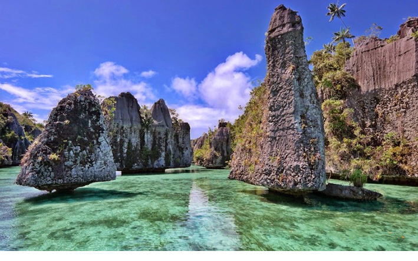

Raja Ampat, The Hidden Paradise Indonesia!
Kamu suka penasaran ga sih kenapa tempat-tempat wisata di Indonesia tiba-tiba mendadak booming? Contohnya Tebing Keraton di Bandung, Pulau Belitung, Pulau Komodo, Trus akhir-akhir ini Raja Ampat. Padahal tempat-tempat tersebut dari dulu pun emang sudah ada disitu,
Kenapa baru booming akhir-akhir ini yah? Kalo dari data yang ada, tempat-tempat yang sekarang ini terkenal karena para wisatawan yang pernah datang ke sana, nge-post foto-foto keren mereka di media sosial, jadi banyak orang yang penasaran. Dilanjutkan wisatawan-wisatawan selanjutnya yang upload foto-foto keren mereka, sehingga membuat orang lain bertanya-tanya “Dimana ya ini, kok bagus banget?” Itulah “The Power of Social Media“.
Yang sekarang lagi hits banget buat kalangan divers alias penyelam adalah Wisata Raja Ampat. Betapa tidak, eksotisnya kepulauan Raja Ampat ini mampu memberikan pengalaman atraktif sehingga menjadi buah bibir di kalangan traveller baik dalam dan luar negeri.
Akan tetapi, mengingat letak geografis yang berada di kawasan Indonesia Timur, buat menikmati tempat wisata ini emang merogoh kocek yang cukup besar. Selain tiket pesawat, kehidupan disana pun cukup lumayan mahal jika dibandingkan kamu yang hidup di Pulau Jawa. Tapi, percayalah, uang yang amu keluarkan untuk ke Raja Ampat sangat sebanding dengan semua pemandangan yang bakal Kamu saksikan!

Pulau ini memang terkenal sebagai surganya para penyelam dunia. Setidaknya ada 1.320 species ikan dan menjadi yang terlengkap di dunia, serta 600 species terumbu karang dan 5 species penyu langka yang dapat dijumpai di perairan Raja Ampat. Keindahan lainnya adalah bongkahan batu-batu besar yang sehingga buat kamu yang tidak bisa menyelam dapat menikmati keindahan alam yang tidak ada duanya ini.
Buat kamu pecinta Nusantara, sempatkan diri ke Raja Ampat di daftar tour kamu selanjutnya yah! Sebagai warga Indonesia, paling enggak kita harus pernah kesini sekali seumur hidup dong, Jangan kalah sama wisatawan luar negeri. Sempetin juga ngobrol dengan warga lokal dan mencoba makanan khas setempat. Happy adventuring, everyone!